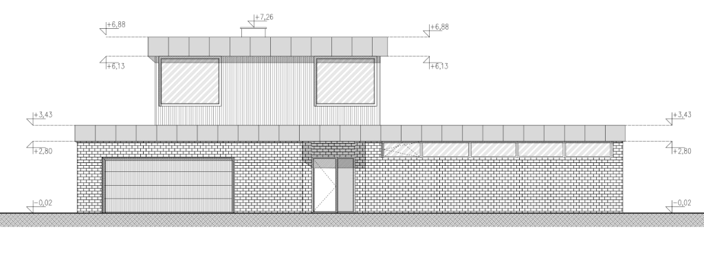

Exterior architectural elevation of the western entrance and driveway facade looking East towards the building.
Configured in the 2D Building Coordinate System with direction: "south", active horizontal plan axis Y (<north - south>),
North left edge at Y = 0 mm, and overall ground floor length of 21,415 mm.
Hover or click the numbered markers on the source architectural drawing (North = Left, South = Right) to inspect each opening.

(0, 0) at North-East Corner
The architectural coordinate service transforms 2D building coordinates (x, y) into local 1D horizontal screen coordinates for any exterior or interior wall elevation:
(x, y)
• Origin (0, 0): North-East Corner of the building.
• x Axis (<east - west>): 0 mm at East edge, increasing Westward to 20,590 / 21,000 mm.
• y Axis (<north - south>): 0 mm at North edge, increasing Southward to 21,415 mm.
• direction: "west" (North Facade): Axis X, localX = win.x - leftEdge (+ΔX shifts RIGHT).
• direction: "east" (South Facade, Kitchen, Stairs): Axis X, localX = leftEdge - (win.x + width) (+ΔX shifts LEFT).
• direction: "south" (West Facade): Axis Y, localX = win.y - leftEdge (+ΔY shifts RIGHT).
• direction: "north" (East Facade): Axis Y, localX = leftEdge - (win.y + width) (+ΔY shifts LEFT).
O13a / O13b
• On the North Facade (direction: "west"), O13a sits at the West end of the upper floor (X = 18,990..20,590 mm, Y = 3,100 mm).
• On the West Facade (direction: "south"), O13b wraps around the exact same corner at X = 20,590 mm, Y = 3,180..5,580 mm after the 80 mm corner mullion.
Complete schedule of all 5 openings (windows, garage door, entrance door) on the West Facade (21,415 mm overall length, direction: "south"). Values synchronize in real time with the 2D Architecture Database.
| Symbol | Floor / Room | Screen Offset (North → South) | 2D Plan Coords (X, Y) | Width (mm) | Height (mm) | Sill (hp) | Type & Configuration |
|---|